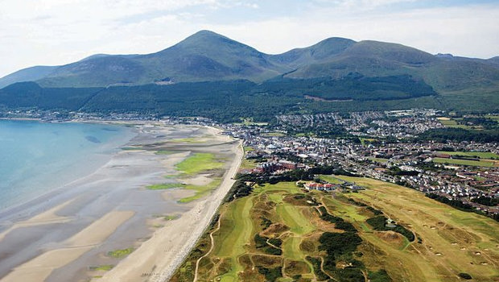

Tourista
Attractions
Giant's Causeway, Co. Antrim

Visit the world famous Giant's Causeway - an area of about 40,000 interlocking basalt columns, the result of an ancient volcanic fissure eruption. Found in County Antrim on the north coast of Northern Ireland, about three miles (4.8 km) northeast of the town of Bushmills.
Carrick-a-Rede Rope Bridge, Co. Antrim
The famous rope bridge can be found near Ballintoy in County Antrim, Northern Ireland. The bridge links the mainland to the tiny island of Carrickarede. It spans 20 metres and is 30 metres above the rocks below. The bridge is mainly a tourist attraction and is owned and maintained by the National Trust.
Dunluce Castle, Co. Antrim
Dunluce Castle is located dramatically close to a headland that plunges straight into the sea, along the North Antrim coast, and was the headquarters of the MacDonnell Clan. There is archaeological evidence of a village that surrounded the castle which was destroyed by fire in 1641.The site has also witnessed the sinking of a colony ship that broke up on the rocks off Islay in 1857 with the loss of 240 lives.
Mussenden Temple, Co. Derry/Londonderry
Mussenden Temple is located in the beautiful surroundings of Downhill Demesne near Castlerock in County Derry. It perches dramatically on a 120 ft cliff top, high above the Atlantic Ocean on the north-western coast of Northern Ireland, offering spectacular views westwards over Downhill Strand towards Magilligan Point and County Donegal and to the east Castlerock beach towards Portstewart, Portrush and Fair Head.
The Dark Hedges, Co. Antrim
The Dark Hedges is one of the most photographed natural phenomena in Northern Ireland and a popular attraction for tourists from across the world. It has been painted by hundreds of visiting artists and is a favourite location for wedding photographs. They have became particularly popular in recent years due to being featured in the TV show ‘Game of Thrones’.
Enniskillen Castle, Co. Fermanagh
Enniskillen Castle, situated beside the River Erne in County Fermanagh, was built almost 600 years ago by the ruling Gaelic Maguires. Guarding one of the few passes into Ulster, it has been strategically important throughout its history.
Lough Erne, Co. Fermanagh
Lough Erne or Loch Erne is the name of two connected lakes in County Fermanagh. It is the second-biggest lake system in Ulster, and the fourth biggest in Ireland.
Activities
Take the Bushmills Distillery Tour
Bushmills Irish Whiskey is made at Ireland’s oldest working distillery in County Antrim, Northern Ireland. The Bushmills Brand Experience encompasses guided tours around a working distillery with all the associated sights and smells, tutored whiskey tastings, a specialist whiskey shop and a well-stocked gift shop with exclusive Bushmills merchandise. There is also a restaurant serving lunches and Bushmills inspired treats throughout the day. The Distillery Tour Centre is open 7 days a week.
Climb Northern Ireland's Tallest Mountains
The Mourne Mountains are a granite mountain range in County Down. It includes the highest mountains in Northern Ireland and the province of Ulster. The highest of these is Slieve Donard at 850 metres (2,790 ft).
Explore the Titanic Exhibition Centre
In 2012, during the centenary of the loss of this famous vessel to an iceberg in the North Atlantic, the brand new Titanic Belfast centre opened to the public. The stunning design of the venue is meant to remind you of two ships being built side-by-side in the Harland & Wolff shipyards, and the building contains a fantastic series of interactive displays on Belfast’s industrial heritage – as well as, of course, the history of Titanic herself from inception right up to exploring the seabed and finding the wreck. You can see recreations of cabins on board, learn fascinating facts about the vessel and even enjoy afternoon champagne teas in a recreation of the famous grand staircase from the ship.
Entertainment
Do a Traditional Irish Pub Crawl
With so many to choose from, how could you not stop into a few of Northern Ireland's best bars? Click below for a few ideas for pub crawls in Belfast.
Student Pub Crawl
- The Parlour
- The Empire
- Lavery's
- Benedict's
- Filthy McNasty
Cathedral Quarter Pub Crawl
- 39 Gordon Street
- Duke of York
- The Dirty Onion and Yardbird
- The Thirsty Goat
- The Spaniard
City Centre Pub Crawl
- Wetherspoons Bridge House
- Pug Ugly's
- The Perch Rooftop Bar
- Voodoo
- Maddens
Traditional Irish Pub Crawl
- The Points
- The Crown Liquor Saloon
- Robinson's Bar
- Kelly's Cellars
- Whites Tavern
Watch a Belfast Giants Game at the SSE Arena
Belfast’s home Ice Hockey team is the Belfast Giant’s. They play their home games at the Odyssey Arena.
See the North West 200, Co. Derry
The North West 200 is a motorcycle race meeting held each May along the north coast of Ireland. The course is a street circuit, made up of public roads running between the towns of Portstewart, Coleraine and Portrush (the Triangle) is one of the fastest in the world, with speeds in excess of 200 mph (320 km/h).